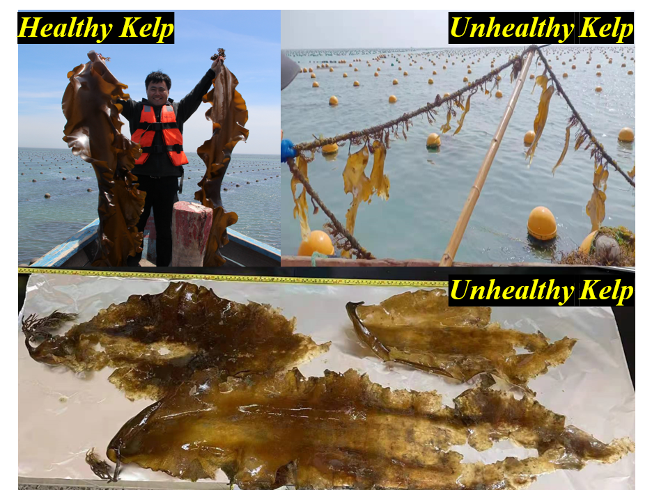
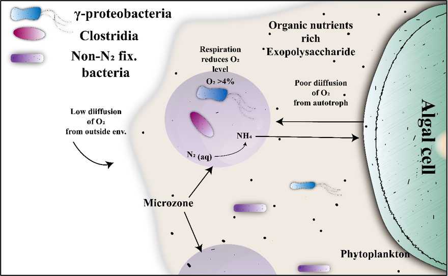
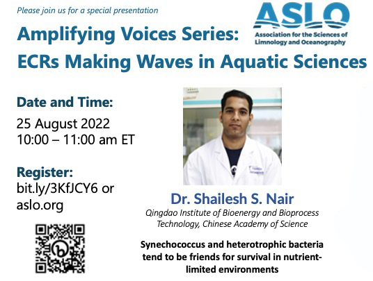

Postdoctoral Researcher
Qingdao Institute of Bioenergy and Bioprocess Technology
Chinese Academy of Sciences
Always eager to explore more about what’s under the sky and beyond. I am a Postdoctoral Fellow working under professor Yongyu Zhang at the Research Center for Marine Biology and Carbon Sequestration, Qingdao institute of bioenergy and bioprocess technology, Chinese Academy of Sciences. My research interests lie in marine microbial ecology with particular emphasis on interactions between algae, bacteria, and viruses and their influence on marine nutrient cycling. I use bioinformatics tools such as metagenomics, metatranscriptomics coupled with flow cytometry, isotope labeling and wet lab analysis to elucidate microbial processes in natural systems. Aside from academics, I enjoy cooking, writing stories/poems, swimming, cricket, and other fitness activities. My full CV is here.
 New project! April 2022: This project aims to investigate into the recent kelp disease outbreak in Weihai, Shandong, China. We will carry out multi-parameter assessment of the kelp and the surrounding sea.
 Role of algae-bacteria interactions in bacterial nitrogen fixation May 2022: We had exciting findings from our Sci. adv. publication. We will continue to investigate how interactions between algae and bacteria can support heterotrophic bacterial nitrogen fixation.
 Decoding the mechanisms behind the recurrent mutualism between marine Synechococcus sp. PCC7002 and heterotrophic bacterial community despite environmental interference under long-term coexistence August 2022: ASLO-Amplifying Voices Webinar.
Publications 2022 Nair S, Zhang Z, Li H, Zhao H, Shen H, Gao S, Jiao N, Zhang Y. Inherent tendency of Synechococcus and heterotrophic bacteria for mutualism on long-term coexistence despite environmental interference. Science Advances, 2022. doi: 10.1126/sciadv.abf4792. 2022 Nair S, Li C, Mou S, Zhang Z, Zhang Y. A novel phage indirectly regulates diatom growth by infecting diatom-associated biofilm-forming bacterium. Applied and Environmental Microbiology, 2022. doi: 10.1128/AEM.02138-21. 2022 Zhang Z, Zhao H, Mou S, Nair S, Zhao J, Jiao N, Zhang Y. Phage infection benefits marine diatom Phaeodactylum tricornutum by regulating the associated bacterial community. Microbial Ecology, 2022. doi: 10.1007/s00248-022-02045-1. 2022 Mou S, Zhang Z, Zhao H, Nair S, Li Y, Xu K, et al. A dark‐tolerant diatom (Chaetoceros) cultured from the deep sea. Journal of Phycology, 2022. doi: 10.1111/jpy.13240. 2022 Zhao H, Zhang Z, Nair S, Zhao J, Mou S, Xu K, Zhang Y. Vertically exported phytoplankton (< 20 µm) and their correlation network with bacterioplankton along a deep-sea seamount. Frontiers in Marine Science, 2022. doi: 10.3389/fmars.2022.862494. 2021 Zhang Z, Nair S (co-first author), Tang L, Zhao H, Hu Z, Chen M, Zhang Y, Kao S-J, Jiao N, Zhang Y. Long-term survival of Synechococcus and heterotrophic bacteria without external nutrient supply after changes in their relationship from antagonism to mutualism. mBio, 2021. doi: 10.1128/mBio.01614-21. Contact Address Research Center for Marine Biology and Carbon Sequestration, Room no. 517, Biology Building, Qingdao Institute of Bioenergy and Bioprocess Technology Chinese Academy of Sciences, Laoshan, Qingdao-China, 266100 Email Shail@qibebt.ac.cn Twitter Github Design: HTML5 UP